Circuitos Integrados Analógicos
Introducción
Cosa análogaLos circuitos son circuitos que manejan señales libres de variar desde cero hasta el voltaje de alimentación total. Esto contrasta condigitalcircuitos, que emplean casi exclusivamente señales de "todo o nada": tensiones restringidas a valores de cero y tensión de alimentación total, sin ningún estado válido entre esos límites extremos. Los circuitos analógicos a menudo se denominanlinealcircuitos para enfatizar la continuidad válida del rango de señal prohibido en circuitos digitales, pero lamentablemente esta etiqueta es engañosa. El hecho de que se permita que una señal de voltaje o corriente varíe suavemente entre los extremos de cero y los límites de suministro de energía total no significa necesariamente que todas las relaciones matemáticas entre estas señales sean lineales en el sentido de "línea recta" o "proporcional" de la palabra. Como verá en este capítulo, muchos de los llamados circuitos "lineales" son bastantenonlineal en su comportamiento, ya sea por necesidad de la física o por diseño.
Los circuitos de este capítulo utilizanIC, ocircuito integrado, componentes. Estos componentes son en realidad redes de componentes interconectados fabricados en una única oblea de material semiconductor. Los circuitos integrados que proporcionan una multitud de funciones prediseñadas están disponibles a un costo muy bajo, lo que beneficia tanto a estudiantes como a aficionados y diseñadores de circuitos profesionales. La mayoría de los circuitos integrados proporcionan la misma funcionalidad que los circuitos semiconductores "discretos" con niveles más altos de confiabilidad y a una fracción del costo. Por lo general, la construcción de circuitos de componentes discretos se favorece sólo cuando los niveles de disipación de potencia son demasiado altos para que los puedan manejar los circuitos integrados.
Quizás el circuito integrado analógico más versátil e importante que el estudiante debe dominar es elamplificador operacional, oamplificador operacional. Esencialmente, nada más que un amplificador diferencial con una ganancia de voltaje muy alta, los amplificadores operacionales son el caballo de batalla del mundo del diseño analógico. Al aplicar inteligentemente la retroalimentación de la salida de un amplificador operacional a una o más de sus entradas, se puede obtener una amplia variedad de comportamientos a partir de este único dispositivo. Hay muchos modelos diferentes de amplificadores operacionales disponibles a bajo costo, pero los circuitos descritos en este capítulo incorporarán sólo modelos de amplificadores operacionales comúnmente disponibles.
Comparador de tensión
PIEZAS Y MATERIALES
- Amplificador operacional, recomendado modelo 1458 o 353 (catálogo de Radio Shack # 276-038 y 900-6298, respectivamente)
- Tres baterías de 6 voltios
- Dos potenciómetros de 10 kΩ, conicidad lineal (catálogo de Radio Shack # 271-1715)
- Un diodo emisor de luz (catálogo de Radio Shack # 276-026 o equivalente)
- Una resistencia de 330 Ω
- Una resistencia de 470 Ω
Este experimento sólo requiere un único amplificador operacional. Los modelos 1458 y 353 son unidades de amplificador operacional "duales", con dos circuitos amplificadores completos alojados en el mismo paquete DIP de 8 pines. Le recomiendo que compre y use amplificadores operacionales "duales" en lugar de amplificadores operacionales "simples", incluso si un proyecto solo requiere uno, porque son más versátiles (la misma unidad de amplificador operacional puede funcionar en proyectos que requieren solo un amplificador, así como en proyectos que requieren dos). En aras de comprar y almacenar la menor cantidad de componentes para su laboratorio doméstico, esto tiene sentido.
REFERENCIAS CRUZADAS
Lecciones en circuitos eléctricos, Volumen 3, capítulo 8: "Amplificadores operacionales"
OBJETIVOS DE APRENDIZAJE
- Cómo utilizar un amplificador operacional como comparador
DIAGRAMA ESQUEMÁTICO
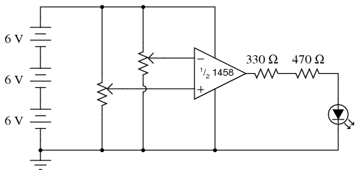
ILUSTRACIÓN
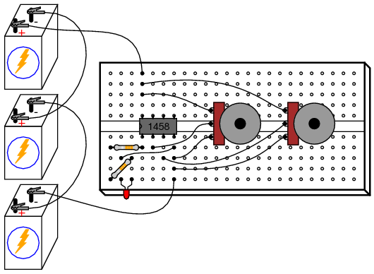
INSTRUCCIONES
A comparadorEl circuito compara dos señales de voltaje y determina cuál es mayor. El resultado de esta comparación está indicado por el voltaje de salida: si la salida del amplificador operacional está saturada en la dirección positiva, la entrada no inversora (+) es un voltaje mayor o más positivo que la entrada inversora (-), todos los voltajes se miden con respecto a tierra. Si el voltaje del amplificador operacional está cerca del voltaje de suministro negativo (en este caso, 0 voltios o potencial de tierra), significa que a la entrada inversora (-) se le aplica un voltaje mayor que a la entrada no inversora (+).
Este comportamiento se comprende mucho más fácilmente experimentando con un circuito comparador que leyendo la descripción verbal que alguien hace del mismo. En este experimento, dos potenciómetros suministran voltajes variables para que el amplificador operacional los compare. El estado de salida del amplificador operacional se indica visualmente mediante el LED. Al ajustar los dos potenciómetros y observar el LED, se puede comprender fácilmente la función de un circuito comparador.
Para obtener una mejor comprensión del funcionamiento de este circuito, es posible que desees conectar un par de voltímetros a los terminales de entrada del amplificador operacional (ambos voltímetros con referencia a tierra) para que ambos voltajes de entrada puedan compararse numéricamente entre sí, estas indicaciones del medidor se comparan con el estado del LED:
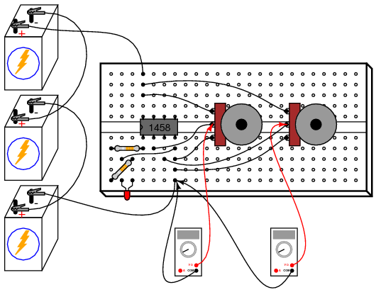
Los circuitos comparadores se utilizan ampliamente para comparar mediciones físicas, siempre que esas variables físicas puedan traducirse en señales de voltaje. Por ejemplo, si se conectara un pequeño generador a una rueda de anemómetro para producir un voltaje proporcional a la velocidad del viento, esa señal de velocidad del viento podría compararse con un voltaje de "punto de ajuste" y compararse con un amplificador operacional para activar una alarma de alta velocidad del viento:
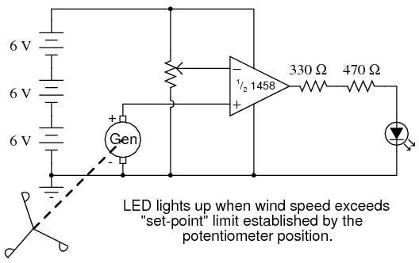
Seguidor de tensión de precisión
PIEZAS Y MATERIALES
- Amplificador operacional, recomendado modelo 1458 o 353 (catálogo de Radio Shack # 276-038 y 900-6298, respectivamente)
- Tres baterías de 6 voltios
- Un potenciómetro de 10 kΩ, conicidad lineal (catálogo de Radio Shack # 271-1715)
REFERENCIAS CRUZADAS
Lecciones en circuitos eléctricos, Volumen 3, capítulo 8: "Amplificadores operacionales"
OBJETIVOS DE APRENDIZAJE
- Cómo utilizar un amplificador operacional como seguidor de voltaje
- Propósito de la retroalimentación negativa
- Estrategia de resolución de problemas
DIAGRAMA ESQUEMÁTICO
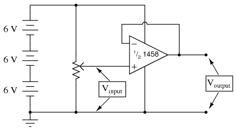
ILUSTRACIÓN
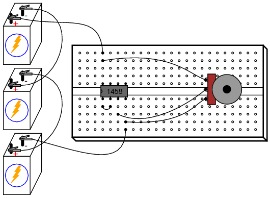
INSTRUCCIONES
En el experimento anterior con amplificador operacional, el amplificador se utilizó en modo de "bucle abierto"; es decir, sin ningúncomentariodesde la salida hasta la entrada. Como tal, la ganancia de voltaje total del amplificador operacional estaba disponible, lo que resultaba en que el voltaje de salida se saturara para prácticamente cualquier cantidad de voltaje diferencial aplicado entre los dos terminales de entrada. Esto es bueno si deseamos el funcionamiento del comparador, pero si queremos que el amplificador operacional se comporte como un verdaderoamplificador, necesitamos que exhiba una ganancia de voltaje manejable.
Como no podemos darnos el lujo de desmontar el circuito integrado del amplificador operacional y cambiar los valores de resistencia para obtener una ganancia de voltaje menor, estamos limitados a conexiones y componentes externos. En realidad, esto no es una desventaja como podría pensarse, porque la combinación de una ganancia de voltaje de bucle abierto extremadamente alta junto con la retroalimentación nos permite usar el amplificador operacional para una variedad mucho más amplia de propósitos, mucho más fácil que si tuviéramos que ejercer la opción de modificar su circuito interno.
Si conectamos la salida de un amplificador operacional a su entrada inversora (-), el voltaje de salida buscará cualquier nivel necesario para equilibrar el voltaje de la entrada inversora con el aplicado a la entrada no inversora (+). Si esta conexión de retroalimentación es directa, como en un trozo de cable recto, el voltaje de salida "seguirá" con precisión el voltaje de entrada no inversora. A diferencia delseguidor de voltajecircuito hecho de un solo transistor (consulte el capítulo 5: Circuitos semiconductores discretos), que aproxima el voltaje de entrada a varias décimas de voltio, este circuito seguidor de voltaje generará un voltaje con una precisión de merosmicrovoltiosdel voltaje de entrada!
Mida el voltaje de entrada de este circuito con un voltímetro conectado entre el terminal de entrada no inversor (+) del amplificador operacional y la tierra del circuito (el lado negativo de la fuente de alimentación), y el voltaje de salida entre el terminal de salida del amplificador operacional y la tierra del circuito. Observe que el voltaje de salida del amplificador operacional sigue el voltaje de entrada mientras ajusta el potenciómetro en su rango.
Puede medir directamente la diferencia, oerror, entre los voltajes de salida y entrada conectando el voltímetro entre los dos terminales de entrada del amplificador operacional. En la mayor parte del rango del potenciómetro, este voltaje de error debería ser casi cero.
Intente mover el potenciómetro a una de sus posiciones extremas, en el sentido de las agujas del reloj o en el sentido contrario a las agujas del reloj. Mida el voltaje de error o compare el voltaje de salida con el voltaje de entrada. ¿Notas algo inusual? Si está utilizando el amplificador operacional modelo 1458 o modelo 353 para este experimento, debe medir un voltaje de error sustancial o una diferencia entre la salida y la entrada. Muchos amplificadores operacionales, incluidos los modelos especificados, no pueden "oscilar" su voltaje de salida exactamente a los niveles de voltaje totales de la fuente de alimentación ("riel"). En este caso, los voltajes del "carril" son +18 voltios y 0 voltios, respectivamente. Debido a limitaciones en el circuito interno del 1458, su voltaje de salida no puede alcanzar exactamente estos límites alto y bajo. Es posible que descubra que sólo puede llegar a uno o dos voltios de los "rieles" de la fuente de alimentación. Esta es una limitación muy importante que hay que comprender al diseñar circuitos que utilizan amplificadores operacionales. Si se requiere una oscilación completa del voltaje de salida "riel a riel" en un diseño de circuito, se pueden seleccionar otros modelos de amplificador operacional que ofrezcan esta capacidad. El modelo 3130 es uno de esos amplificadores operacionales.
Los circuitos seguidores de voltaje de precisión son útiles si la señal de voltaje que se va a amplificar no puede tolerar la "carga"; es decir, si tiene una impedancia de fuente alta. Dado que un seguidor de voltaje, por definición, tiene una ganancia de voltaje de 1, su propósito no tiene nada que ver con amplificar el voltaje, sino con amplificar la capacidad de una señal para entregarcorrientea una carga.
Los circuitos seguidores de voltaje tienen otro uso importante para los constructores de circuitos: permiten realizar pruebas lineales simples de un amplificador operacional. Una de las técnicas de solución de problemas que recomiendo essimplificar y reconstruir. Suponga que está construyendo un circuito utilizando uno o más amplificadores operacionales para realizar alguna función avanzada. Si uno de esos amplificadores operacionales parece estar causando un problema y sospecha que puede estar defectuoso, intente volver a conectarlo como un simple seguidor de voltaje y vea si funciona en esa capacidad. ¡Un amplificador operacional que no funciona como seguidor de voltaje ciertamente no funcionará como algo más complejo!
SIMULACIÓN POR COMPUTADORA
Esquema con números de nodo SPICE:
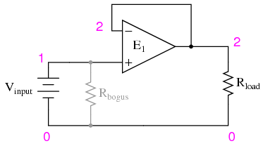
Netlist (cree un archivo de texto que contenga el siguiente texto, textualmente):
Voltage follower vinput 1 0 rbogus 1 0 1meg e1 2 0 1 2 999meg rload 2 0 10k .dc vinput 5 5 1 .print dc v(1,0) v(2,0) v(1,2) .end
Se puede simular un amplificador operacional ideal en SPICE utilizando unfuente de voltaje dependiente (e1en la lista de redes). Los nodos de salida se especifican primero (2 0), luego los dos nodos de entrada, primero la entrada no inversora (1 2). La ganancia de bucle abierto se especifica al final (999meg) en la línea de fuente de voltaje dependiente.
Debido a que SPICE considera que la impedancia de entrada de una fuente dependiente es infinita, se debe incluir una cantidad finita de resistencia para evitar un error de análisis. Este es el propósito de Rfalso: para proporcionar una ruta de CC a tierra para la Vaportefuente de voltaje. Estas "falsas" resistencias deberían ser arbitrariamente grandes. En esta simulación elegí 1 MΩ para una Rfalsovalor.
Se incluye una resistencia de carga en el circuito por la misma razón: proporcionar una ruta de CC para la corriente en la salida de la fuente de voltaje dependiente. Como puedes ver, ¡a SPICE no le gustan los circuitos abiertos!
Noninverting amplifier
PIEZAS Y MATERIALES
- Amplificador operacional, recomendado modelo 1458 o 353 (catálogo de Radio Shack # 276-038 y 900-6298, respectivamente)
- Tres baterías de 6 voltios
- Dos potenciómetros de 10 kΩ, conicidad lineal (catálogo de Radio Shack # 271-1715)
REFERENCIAS CRUZADAS
Lecciones en circuitos eléctricos, Volumen 3, capítulo 8: "Amplificadores operacionales"
OBJETIVOS DE APRENDIZAJE
- Cómo utilizar un amplificador operacional como amplificador de un solo extremo
- Usar comentarios divididos y negativos
DIAGRAMA ESQUEMÁTICO
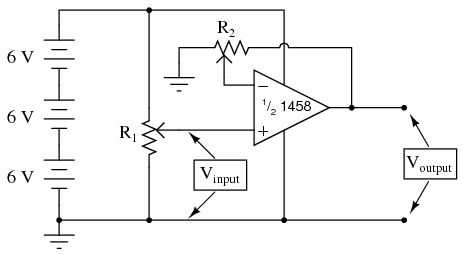
ILUSTRACIÓN
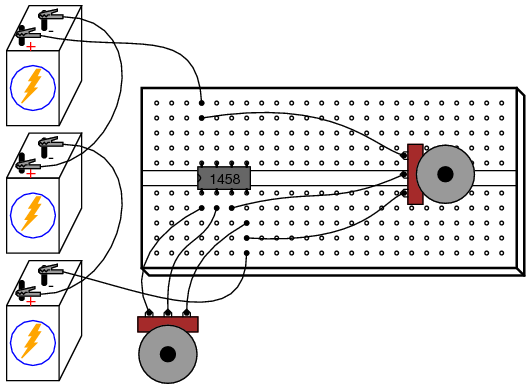
INSTRUCCIONES
Este circuito se diferencia del seguidor de voltaje sólo en un aspecto: el voltaje de salida se "realimenta" a la entrada inversora (-) a través de un potenciómetro divisor de voltaje en lugar de estar conectado directamente. con solo unfraccióndel voltaje de salida devuelto a la entrada inversora, el amplificador operacional generará un correspondientemúltipledel voltaje detectado en la entrada no inversora (+) para mantener el voltaje diferencial de entrada cerca de cero. En otras palabras, el amplificador operacional ahora funcionará como un amplificador con una ganancia de voltaje controlable, esa ganancia se establece mediante la posición del potenciómetro de retroalimentación (R2).
Establecer R2hasta aproximadamente la mitad de la posición. Esto debería dar una ganancia de voltaje de aproximadamente 2. Mida tanto el voltaje de entrada como el de salida para varias posiciones del potenciómetro de entrada R.1. Mover R2a una posición diferente y volver a tomar mediciones de voltaje para varias posiciones de R1. Para cualquier R dado2posición, la relación entre el voltaje de salida y de entrada debe ser la misma.
También notarás que los voltajes de entrada y salida siempre son positivos con respecto a tierra. Debido a que el voltaje de salida aumenta en una dirección positiva para un aumento positivo del voltaje de entrada, este amplificador se conoce comono inversor. Si los voltajes de salida y entrada estuvieran relacionados entre sí de manera inversa (es decir, un aumento positivo del voltaje de entrada da como resultado una salida positiva decreciente o negativa creciente), entonces el amplificador se conocería como uninvirtiendotipo.
La capacidad de aprovechar un amplificador operacional de esta manera para crear un amplificador con ganancia de voltaje controlable hace que este circuito sea extremadamente útil. Se necesitaría bastante más esfuerzo de diseño y resolución de problemas para producir un circuito similar utilizando transistores discretos.
Intenta ajustar R2para ganancia de voltaje máxima y mínima. cual es elmás bajo¿Se puede obtener ganancia de voltaje con esta configuración de amplificador? ¿Por qué crees que es esto?
SIMULACIÓN POR COMPUTADORA
Esquema con números de nodo SPICE:
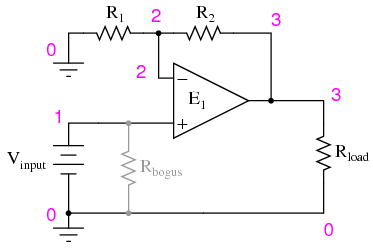
Netlist (cree un archivo de texto que contenga el siguiente texto, textualmente):
Noninverting amplifier vinput 1 0 r2 3 2 5k r1 2 0 5k rbogus 1 0 1meg e1 3 0 1 2 999meg rload 3 0 10k .dc vinput 5 5 1 .print dc v(1,0) v(3,0) .end
con r1y r2establecido igualmente en 5 kΩ en la simulación, imita el potenciómetro de retroalimentación del circuito real en la posición media (50%). Para simular el potenciómetro en la posición 75%, configure R2a 7,5 kΩ y R1a 2,5 kΩ.
High-impedance voltmeter
PIEZAS Y MATERIALES
- Amplificador operacional, se recomienda modelo TL082 (catálogo de Radio Shack # 276-1715)
- Amplificador operacional, se recomienda modelo LM1458 (catálogo de Radio Shack # 276-038)
- Cuatro baterías de 6 voltios
- Movimiento de un metro, desviación de escala completa de 1 mA (catálogo de Radio Shack #22-410)
- 15 kΩ precision resistor
- Cuatro resistencias de 1 MΩ
El movimiento del medidor de 1 mA vendido por Radio Shack se anuncia como un medidor de 0-15 VCC, pero en realidad es un movimiento de 1 mA vendido con una resistencia multiplicadora de tolerancia de 15 kΩ +/- 1%. Si obtiene el movimiento de este medidor de Radio Shack, puede usar la resistencia de 15 kΩ incluida para la resistencia especificada en la lista de piezas.
Este experimento de medidor se basa en un amplificador operacional de entrada JFET como el TL082. El otro amplificador operacional (modelo 1458) se utiliza en este experimento para demostrar la ausencia de enganche: un problema inherente al TL082.
No necesitas resistencias de 1 MΩ,exactamente. Cualquier resistencia de muy alta resistencia será suficiente.
REFERENCIAS CRUZADAS
Lecciones en circuitos eléctricos, Volumen 3, capítulo 8: "Amplificadores operacionales"
OBJETIVOS DE APRENDIZAJE
- Carga del voltímetro: sus causas y su solución.
- Cómo hacer un voltímetro de alta impedancia usando un amplificador operacional
- Qué es el "enganche" del amplificador operacional y cómo evitarlo
DIAGRAMA ESQUEMÁTICO
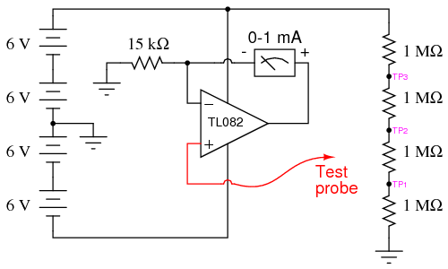
ILUSTRACIÓN
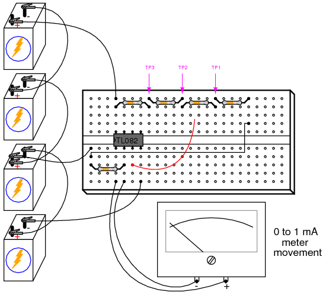
INSTRUCCIONES
Un voltímetro ideal tiene una impedancia de entrada infinita, lo que significa que no consume corriente del circuito bajo prueba. De esta manera, no habrá "impacto" en el circuito mientras se mide el voltaje. Cuanta más corriente extraiga un voltímetro del circuito bajo prueba, más se "hundirá" el voltaje medido bajo el efecto de carga del medidor, como un manómetro que libera aire del neumático que se está midiendo: cuanto más aire se libere del neumático, más se verá afectada la presión del neumático en el acto de medición. Esta carga es más pronunciada en circuitos de alta resistencia, como el divisor de voltaje hecho con resistencias de 1 MΩ, que se muestra en el diagrama esquemático.
Si construyera un voltímetro simple de rango de 0 a 15 voltios conectando el movimiento del medidor de 1 mA en serie con la resistencia de precisión de 15 kΩ e intentara usar este voltímetro para medir los voltajes en TP1, TP2 o TP3 (con respecto a tierra), encontraríaseveroErrores de medición inducidos por el "impacto" del medidor:
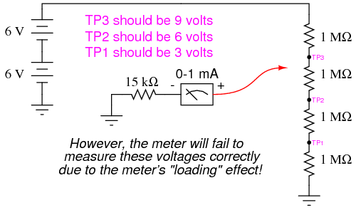
Intente usar el movimiento del medidor y la resistencia de 15 kΩ como se muestra para medir estos tres voltajes. ¿El medidor lee falsamente alto o falsamente bajo? ¿Por qué crees que es esto?
Si incrementáramos la impedancia de entrada del medidor, disminuiríamos su consumo de corriente o "carga" en el circuito bajo prueba y, en consecuencia, mejoraríamos su precisión de medición. Un amplificador operacional con entradas de alta impedancia (que utiliza una etapa de entrada de transistor JFET en lugar de una etapa de entrada BJT) funciona bien para esta aplicación.
Tenga en cuenta que el movimiento del medidor es parte del circuito de retroalimentación del amplificador operacional desde la salida hasta la entrada inversora. Este circuito impulsa el movimiento del medidor con una corriente proporcional al voltaje impreso en la entrada no inversora (+), la corriente requerida se suministra directamente desde las baterías a través de las clavijas de alimentación del amplificador operacional, no desde el circuito bajo prueba a través de la sonda de prueba. El rango del medidor lo establece la resistencia que conecta la entrada inversora (-) a tierra.
Construya el circuito del medidor de amplificador operacional como se muestra y vuelva a tomar medidas de voltaje en TP1, TP2 y TP3. Esta vez debería disfrutar de un éxito mucho mayor, ya que el movimiento del medidor mide con precisión estos voltajes (aproximadamente 3, 6 y 9 voltios, respectivamente).
Puede ser testigo de la extrema sensibilidad de este voltímetro tocando la sonda de prueba con una mano y el terminal más positivo de la batería con la otra. Observe cómo puede impulsar la aguja hacia arriba en la escala simplemente midiendo el voltaje de la batería a través de la resistencia de su cuerpo: una hazaña imposible con el circuito voltímetro original no amplificado. Si toca tierra con la sonda de prueba, el medidor debe leer exactamente 0 voltios.
Una vez que hayas demostrado que este circuito funciona, modifícalo cambiando la fuente de alimentación de dual a dividida. Esto implica quitar la conexión a tierra del grifo central entre la segunda y la tercera batería y, en su lugar, conectar a tierra el terminal más negativo de la batería:
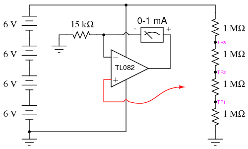
Esta alteración en la fuente de alimentación aumenta los voltajes en TP1, TP2 y TP3 a 6, 12 y 18 voltios, respectivamente. Con una resistencia de rango de 15 kΩ y un movimiento de medidor de 1 mA, medir 18 voltios "fijará" suavemente el medidor, pero debería poder medir bien los puntos de prueba de 6 y 12 voltios.
Intente tocar tierra con la sonda de prueba del medidor. EstedeberíaConduzca la aguja del medidor exactamente a 0 voltios como antes, ¡pero no lo hará! Lo que está sucediendo aquí es un fenómeno de amplificador operacional llamadoengancharse: donde la salida del amplificador operacional conduce a un voltaje positivo cuando el voltaje de modo común de entrada excede el límite permitido. En este caso, como ocurre con muchos amplificadores operacionales de entrada JFET, no se debe permitir que ninguna entrada se acerque al voltaje del riel de suministro de energía. Con un solo suministro, el riel de alimentación negativo del amplificador operacional está en potencial de tierra (0 voltios), por lo que conectar a tierra la sonda de prueba lleva la entrada no inversora (+) exactamente a ese voltaje del riel. Esto es malo para un amplificador operacional JFET y hace que la salida sea fuertemente positiva, aunque no parece que debería, según cómo se supone que funcionan los amplificadores operacionales.
Cuando el amplificador operacional funcionó con un suministro "doble" (+12/-12 voltios, en lugar de un suministro "único" de +24 voltios), el riel de suministro de energía negativo estaba a 12 voltios de tierra (0 voltios), por lo que conectar a tierra la sonda de prueba no violó el límite de voltaje de modo común del amplificador operacional. Sin embargo, con el suministro "único" de +24 voltios, tenemos un problema. Tenga en cuenta que algunos amplificadores operacionales no se "enganchan" como lo hace el modelo TL082. Puede reemplazar el TL082 con un amplificador operacional LM1458, que es compatible pin por pin (no se necesitan cambios en el cableado de la placa). El modelo 1458 no se "enganchará" cuando la sonda de prueba esté conectada a tierra, aunque es posible que aún obtenga lecturas incorrectas del medidor con el voltaje medido exactamente igual al riel negativo de suministro de energía. Como regla general, siempre debe asegurarse de que los voltajes del riel de suministro de energía del amplificador operacional excedan los voltajes de entrada esperados.
Integrator
PIEZAS Y MATERIALES
- Cuatro baterías de 6 voltios
- Amplificador operacional, recomendado modelo 1458 (catálogo de Radio Shack # 276-038)
- Un potenciómetro de 10 kΩ, conicidad lineal (catálogo de Radio Shack # 271-1715)
- Dos capacitores, 0.1 µF cada uno, no polarizados (catálogo de Radio Shack # 272-135)
- Dos resistencias de 100 kΩ
- Tres resistencias de 1 MΩ
Casi cualquier modelo de amplificador operacional funcionará bien para este experimento de integración, pero estoy especificando el modelo 1458 sobre el 353 porque el 1458 tiene corrientes de polarización de entrada mucho más altas. Normalmente, una corriente de polarización de entrada alta es una mala característica que debe tener un amplificador operacional en un circuito amplificador de CC de precisión (¡y especialmente en un circuito integrador!). Sin embargo, quiero que la corriente de polarización sea alta para que sus efectos negativos puedan ser exagerados y para que aprendas un método para contrarrestar sus efectos.
REFERENCIAS CRUZADAS
Lecciones en circuitos eléctricos, Volumen 3, capítulo 8: "Amplificadores operacionales"
OBJETIVOS DE APRENDIZAJE
- Método para limitar el alcance de un potenciómetro.
- Propósito de un circuito integrador
- Cómo compensar la corriente de polarización del amplificador operacional
DIAGRAMA ESQUEMÁTICO
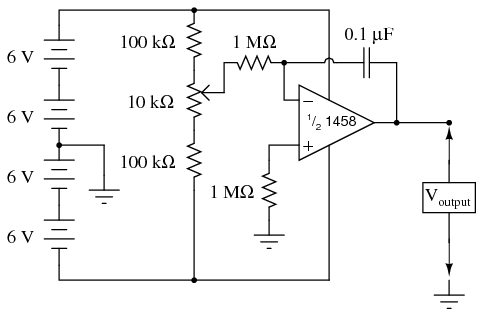
ILUSTRACIÓN
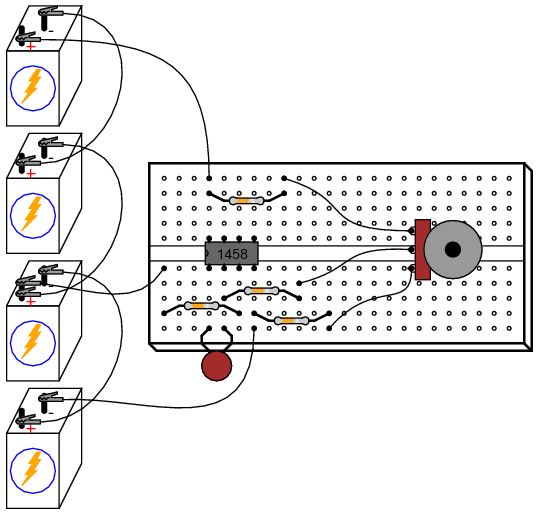
INSTRUCCIONES
Como puede ver en el diagrama esquemático, el potenciómetro está conectado a los "rieles" de la fuente de alimentación a través de resistencias de 100 kΩ, una en cada extremo. Esto es para limitar el alcance del potenciómetro, de modo que el movimiento completo produzca un rango bastante pequeño de voltajes de entrada para que funcione el amplificador operacional. En un extremo del movimiento del potenciómetro, se producirá un voltaje de aproximadamente 0,5 voltios (con respecto al punto de tierra en el medio de la cadena de baterías en serie) en el limpiador del potenciómetro. En el otro extremo del movimiento, se producirá un voltaje de aproximadamente -0,5 voltios. Cuando el potenciómetro está en el punto muerto, el voltaje del limpiador debe medir cero voltios.
Conecte un voltímetro entre el terminal de salida del amplificador operacional y el punto de tierra del circuito. Mueva lentamente el control del potenciómetro mientras monitorea el voltaje de salida. El voltaje de salida debe sercambioa una velocidad establecida por la desviación del potenciómetro desde la posición cero (centro). Para usar términos de cálculo, diríamos que el voltaje de salida representa elintegral(con respecto al tiempo) de la función de voltaje de entrada. Es decir, el nivel de voltaje de entrada establece el voltaje de salida.tasa de cambio a lo largo del tiempo. Esto es precisamente lo contrario dediferenciación, donde elderivadode una señal o función es su tasa de cambio instantánea.
Si tiene dos voltímetros, podrá ver fácilmente esta relación entre el voltaje de entrada y el de salida.tasa de cambio de voltajemidiendo el voltaje del limpiador (entre el limpiador del potenciómetro y tierra) con un medidor y el voltaje de salida (entre el terminal de salida del amplificador operacional y tierra) con el otro. Ajustar el potenciómetro para dar cero voltios debería dar como resultado la tasa de cambio de voltaje de salida más lenta. Por el contrario, cuanto más voltaje entre a este circuito, más rápido cambiará o "aumentará" su voltaje de salida.
Intente conectar el segundo condensador de 0,1 µF en paralelo con el primero. Esto duplicará la cantidad de capacitancia en el circuito de retroalimentación del amplificador operacional. ¿Qué efecto tiene esto en la tasa de integración del circuito para cualquier posición determinada del potenciómetro?
Intente conectar otra resistencia de 1 MΩ en paralelo con la resistencia de entrada (la resistencia que conecta el limpiador del potenciómetro al terminal inversor del amplificador operacional). Esto reducirá a la mitad la resistencia de entrada del integrador. ¿Qué efecto tiene esto en la tasa de integración del circuito?
Los circuitos integradores son una de las funciones fundamentales de una computadora analógica. Al conectar circuitos integradores con amplificadores, sumadores y potenciómetros (divisores), se podía modelar casi cualquier ecuación diferencial y obtener soluciones midiendo los voltajes producidos en varios puntos de la red de circuitos. Como las ecuaciones diferenciales describen tantos procesos físicos, las computadoras analógicas son útiles como simuladores. Antes de la llegada de las computadoras digitales modernas, los ingenieros usaban computadoras analógicas para simular procesos como la vibración de la maquinaria, la trayectoria del cohete y la respuesta del sistema de control. Aunque las computadoras analógicas se consideran obsoletas según los estándares modernos, sus componentes aún funcionan bien como herramientas de aprendizaje de conceptos de cálculo.
Mueva el potenciómetro hasta que el voltaje de salida del amplificador operacional esté lo más cerca de cero que pueda y muévalo lo más lento que pueda. Desconecte la entrada del integrador del terminal del limpiador del potenciómetro y conéctelo a tierra, así:
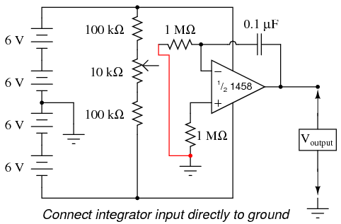
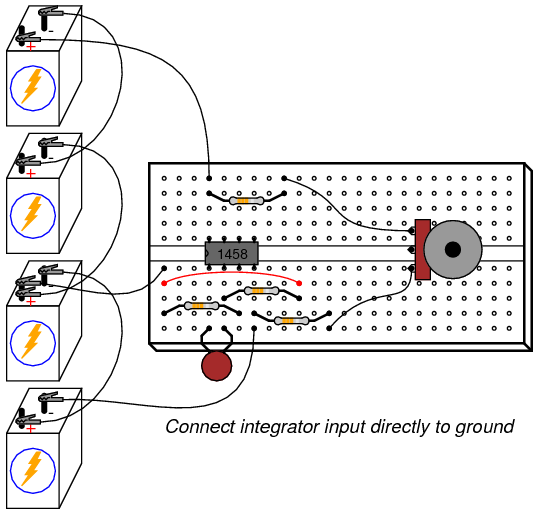
La aplicación de voltaje exactamente cero a la entrada de un circuito integrador debería, idealmente, hacer que la tasa de cambio del voltaje de salida sea cero. Cuando realiza este cambio en el circuito, debería notar que el voltaje de salida permanece en un nivel constante o cambia muy lentamente.
Con la entrada del integrador todavía en cortocircuito a tierra, pase la resistencia de 1 MΩ que conecta la entrada no inversora (+) del amplificador operacional a tierra. No debería haber necesidad de esta resistencia en un circuito de amplificador operacional ideal, por lo que al pasarla en cortocircuito veremos qué función proporciona en este mismo caso.realcircuito del amplificador operacional:
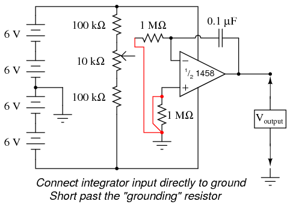
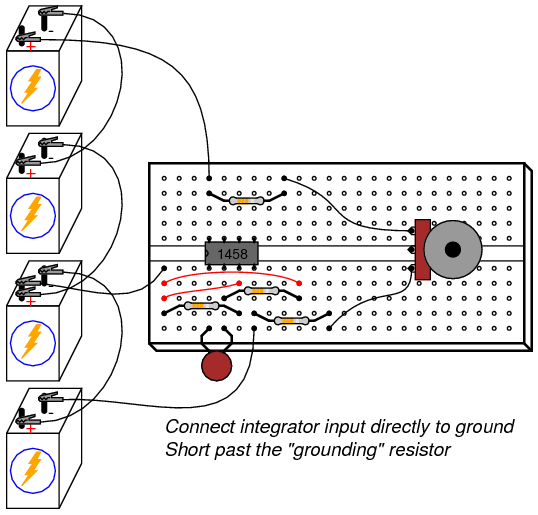
Tan pronto como la resistencia de "conexión a tierra" se cortocircuita con un cable de puente, el voltaje de salida del amplificador operacional comenzará a cambiar o variar. Idealmente, esto no debería suceder, porque el circuito integrador todavía tiene una señal de entrada de cero voltios. Sin embargo, los amplificadores operacionales reales tienen una cantidad muy pequeña de corriente que ingresa a cada terminal de entrada llamadacorriente de polarización. Estas corrientes de polarización reducirán el voltaje a través de cualquier resistencia en su camino. Dado que la resistencia de entrada de 1 MΩ conduce cierta cantidad de corriente de polarización independientemente de la magnitud de la señal de entrada, disminuirá el voltaje en sus terminales debido a la corriente de polarización, "compensando" así la cantidad de voltaje de señal que se ve en el terminal inversor del amplificador operacional. Si la otra entrada (no inversora) está conectada directamente a tierra como lo hemos hecho aquí, este voltaje "compensado" incurrido por la caída de voltaje generada por la corriente de polarización hará que el circuito integrador se "integre" lentamente como si estuviera recibiendo una señal de entrada muy pequeña.
La resistencia de "puesta a tierra" se conoce mejor comoresistencia compensadora, porque actúa para compensar los errores de voltaje creados por la corriente de polarización. Dado que las corrientes de polarización a través de cada terminal de entrada del amplificador operacional son aproximadamente iguales entre sí, una cantidad igual de resistencia colocada en el camino de cada corriente de polarización producirá aproximadamente la misma caída de voltaje. Las caídas de voltaje iguales observadas en las entradas complementarias de un amplificador operacional se anulan entre sí, anulando así el error inducido de otro modo por la corriente de polarización.
Retire el cable de puente que hace cortocircuito más allá de la resistencia de compensación y observe cómo la salida del amplificador operacional vuelve a un estado relativamente estable. Es posible que todavía se desvíe un poco, muy probablemente debido avoltaje de polarizaciónerror en el amplificador operacional en sí, ¡pero ese es otro tema completamente diferente!
SIMULACIÓN POR COMPUTADORA
Esquema con números de nodo SPICE:
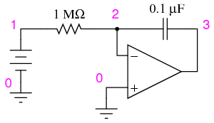
Netlist (cree un archivo de texto que contenga el siguiente texto, textualmente):
DC integrator vinput 1 0 dc 0.05 r1 1 2 1meg c1 2 3 0.1u ic=0 e1 3 0 0 2 999k .tran 1 30 uic .plot tran v(1,0) v(3,0) .end
555 audio oscillator
PIEZAS Y MATERIALES
- Dos baterías de 6 voltios
- Un capacitor, 0.1 µF, no polarizado (catálogo de Radio Shack # 272-135)
- Un IC de temporizador 555 (catálogo de Radio Shack # 276-1723)
- Dos diodos emisores de luz (catálogo de Radio Shack # 276-026 o equivalente)
- Una resistencia de 1 MΩ
- Una resistencia de 100 kΩ
- Dos resistencias de 510 Ω
- Detector de audio con auriculares.
- Osciloscopio (recomendado, pero no necesario)
Un osciloscopio sería útil para analizar las formas de onda producidas por este circuito, pero no es esencial. Un detector de audio es un equipo de prueba muy útil para este experimento, especialmente si no tienes un osciloscopio.
REFERENCIAS CRUZADAS
Lecciones en circuitos eléctricos, Volumen 4, capítulo 10: "Multivibradores"
OBJETIVOS DE APRENDIZAJE
- Cómo utilizar el temporizador 555 como multivibrador astable
- Conocimiento práctico del ciclo de trabajo.
DIAGRAMA ESQUEMÁTICO
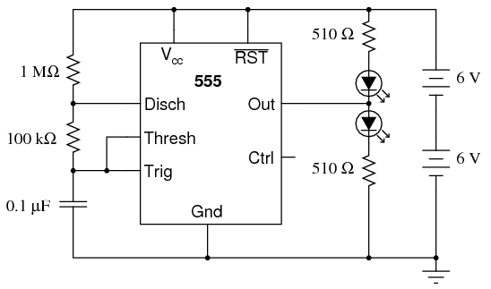
ILUSTRACIÓN
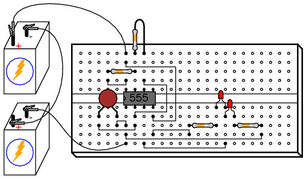
INSTRUCCIONES
El circuito integrado "555" es un temporizador de uso general útil para una variedad de funciones. En este experimento, exploramos su uso como multivibrador u oscilador astable. Conectado a un condensador y dos resistencias como se muestra, oscilará libremente, encendiendo y apagando los LED con un voltaje de salida de onda cuadrada.
Este circuito funciona según el principio de cargar y descargar alternativamente un condensador. El 555 comienza a descargar el capacitor poniendo a tierra eldiscoterminal cuando el voltaje detectado por elTrillarterminal supera 2/3 de la tensión de alimentación (Vcc). Deja de descargar el condensador cuando el voltaje detectado por elTrigonometríaEl terminal cae por debajo de 1/3 del voltaje de la fuente de alimentación. Así, cuando ambosTrillar y Trigonometríaterminales están conectados al terminal positivo del capacitor, el voltaje del capacitor alternará entre 1/3 y 2/3 del voltaje de la fuente de alimentación en un patrón de "dientes de sierra".
Durante el ciclo de carga, el condensador recibe corriente de carga a través de la combinación en serie de resistencias de 1 MΩ y 100 kΩ. Tan pronto como eldiscoEl terminal del temporizador 555 pasa al potencial de tierra (un transistor dentro del 555 conectado entre ese terminal y tierra se enciende), la corriente de descarga del capacitor solo tiene que pasar a través de la resistencia de 100 kΩ. El resultado es una constante de tiempo RC que es mucho más larga para la carga que para la descarga, lo que da como resultado un tiempo de carga que excede con creces el tiempo de descarga.
Los 555Outterminal produce una señal de voltaje de onda cuadrada que es "alta" (casi Vcc) cuando el condensador se está cargando y "bajo" (casi 0 voltios) cuando el condensador se está descargando. Esta señal alterna de voltaje alto/bajo activa los dos LED en modos opuestos: cuando uno está encendido, el otro estará apagado. Debido a que los tiempos de carga y descarga del capacitor son desiguales, los tiempos "alto" y "bajo" de la forma de onda cuadrada de la salida también serán desiguales. Esto se puede ver en el brillo relativo de los dos LED: uno será mucho más brillante que el otro, porque está encendido durante un período de tiempo más largo durante cada ciclo.
La igualdad o desigualdad entre los tiempos "alto" y "bajo" de una onda cuadrada se expresa como el tiempo de esa onda.ciclo de trabajo. Una onda cuadrada con un ciclo de trabajo del 50% es perfectamente simétrica: su tiempo "alto" es exactamente igual a su tiempo "bajo". Se dice que una onda cuadrada que es "alta" el 10% del tiempo y "baja" el 90% del tiempo tiene un ciclo de trabajo del 10%. En este circuito, la forma de onda de salida tiene un tiempo "alto" que excede el tiempo "bajo", lo que resulta en un ciclo de trabajo superior al 50%.
Utilice el detector de audio (o un osciloscopio) para investigar las diferentes formas de onda de voltaje producidas por este circuito. Pruebe diferentes valores de resistencia y/o valores de condensador para ver qué efectos tienen en la frecuencia de salida o los tiempos de carga/descarga.
555 ramp generator
PIEZAS Y MATERIALES
- Dos baterías de 6 voltios
- Un capacitor, electrolítico de 470 µF, 35 WVDC (catálogo de Radio Shack # 272-1030 o equivalente)
- Un capacitor, 0.1 µF, no polarizado (catálogo de Radio Shack # 272-135)
- Un IC de temporizador 555 (catálogo de Radio Shack # 276-1723)
- Dos transistores PNP: se recomiendan los modelos 2N2907 o 2N3906 (el catálogo de Radio Shack # 276-1604 es un paquete de quince transistores PNP ideal para este y otros experimentos)
- Dos diodos emisores de luz (catálogo de Radio Shack # 276-026 o equivalente)
- Una resistencia de 100 kΩ
- Una resistencia de 47 kΩ
- Dos resistencias de 510 Ω
- Detector de audio con auriculares.
La tensión nominal del condensador de 470 µF no es crítica, siempre que supere generosamente la tensión máxima de la fuente de alimentación. En este circuito en particular, ese voltaje máximo es de 12 voltios. ¡Asegúrese de conectar este condensador en el circuito correctamente, respetando la polaridad!
REFERENCIAS CRUZADAS
Lecciones en circuitos eléctricos, Volumen 1, capítulo 13: "Condensadores"
Lecciones en circuitos eléctricos, Volumen 4, capítulo 10: "Multivibradores"
OBJETIVOS DE APRENDIZAJE
- Cómo utilizar el temporizador 555 como multivibrador astable
- Un uso práctico para un circuito espejo de corriente.
- Comprender la relación entre la corriente del capacitor y la tasa de cambio de voltaje del capacitor
DIAGRAMA ESQUEMÁTICO
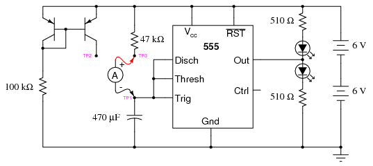
ILUSTRACIÓN
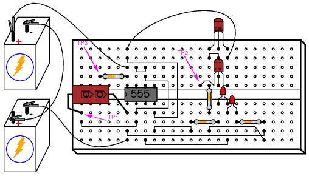
INSTRUCCIONES
Nuevamente, estamos usando un IC de temporizador 555 como multivibrador u oscilador astable. Esta vez, sin embargo, compararemos su funcionamiento en dos modos diferentes de carga de condensadores: RC tradicional y corriente constante.
Conexión del punto de prueba n.º 1 (TP1) al punto de prueba n.º 3 (TP3) mediante un cable de puente. Esto permite que el condensador se cargue a través de una resistencia de 47 kΩ. Cuando el capacitor ha alcanzado 2/3 del voltaje de suministro, el temporizador 555 cambia al modo de "descarga" y descarga el capacitor a un nivel de 1/3 del voltaje de suministro casi de inmediato. En este punto el ciclo de carga comienza de nuevo. Mida el voltaje directamente a través del capacitor con un voltímetro (se prefiere un voltímetro digital) y observe la velocidad de carga del capacitor a lo largo del tiempo. Debería aumentar rápidamente al principio y luego disminuir a medida que aumenta hasta 2/3 del voltaje de suministro, tal como se esperaría de un circuito de carga RC.
Retire el cable de puente de TP3 y vuelva a conectarlo a TP2. Esto permite que el condensador se cargue a través del tramo de corriente controlada de un circuito espejo de corriente formado por los dos transistores PNP. Mida el voltaje directamente a través del capacitor nuevamente, observando la diferencia en la tasa de carga a lo largo del tiempo en comparación con la última configuración del circuito.
Al conectar TP1 a TP2, el condensador recibe una corriente de carga casi constante. La corriente de carga constante del condensador produce una curva de voltaje lineal, como se describe en la ecuación i = C(de/dt). Si la corriente del capacitor es constante, también lo será su tasa de cambio de voltaje a lo largo del tiempo. El resultado es una forma de onda de "rampa" en lugar de una forma de onda de "dientes de sierra":
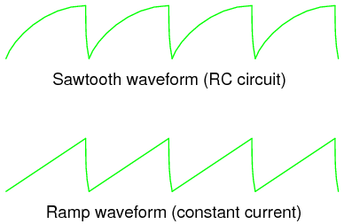
La corriente de carga del condensador se puede medir directamente sustituyendo el cable de puente por un amperímetro. Será necesario configurar el amperímetro para medir una corriente en el rango de cientos de microamperios (décimas de miliamperio). Conectado entre TP1 y TP3, debería ver una corriente que comienza en un valor relativamente alto al comienzo del ciclo de carga y disminuye hacia el final. Conectado entre TP1 y TP2, sin embargo, la corriente será mucho más estable.
En este punto, es un experimento interesante cambiar la temperatura de cualquiera de los transistores espejo de corriente tocándolo con el dedo. A medida que el transistor se calienta, conducirá más corriente de colector para el mismo voltaje base-emisor. si elcontroladorSi se toca el transistor (el que está conectado a la resistencia de 100 kΩ), la corriente disminuye. si elrevisadoSe toca el transistor, la corriente aumenta. Para lograr el funcionamiento más estable del espejo de corriente, los dos transistores deben cementarse entre sí para que sus temperaturas nunca difieran en una cantidad sustancial.
Este circuito funciona tan bien en frecuencias altas como en frecuencias bajas. Reemplace el capacitor de 470 µF con un capacitor de 0,1 µF y use un detector de audio para detectar la forma de onda de voltaje en el terminal de salida del 555. El detector debe producir un tono de audio que sea fácil de escuchar. El voltaje del capacitor ahora cambiará demasiado rápido para verlo con un voltímetro en el modo CC, pero aún podemos medir la corriente del capacitor con un amperímetro.
Con el amperímetro conectado entre TP1 y TP3 (modo RC), mida tanto los microamperios de CC como los microamperios de CA. Registre estas cifras actuales en papel. Ahora conecte el amperímetro entre TP1 y TP2 (modo de corriente constante). Mida tanto los microamperios de CC como los microamperios de CA, observando cualquier diferencia en las lecturas de corriente entre esta configuración de circuito y la última. Medir la corriente CA además de la corriente CC es una manera fácil de determinar qué configuración de circuito proporciona la corriente de carga más estable. Si el circuito espejo de corriente fuera perfecto (la corriente de carga del condensador absolutamente constante), el medidor mediría cero corriente alterna.
Controlador de potencia por PWM
PIEZAS Y MATERIALES
- Cuatro baterías de 6 voltios
- Un capacitor, electrolítico de 100 µF, 35 WVDC (catálogo de Radio Shack # 272-1028 o equivalente)
- Un capacitor, 0.1 µF, no polarizado (catálogo de Radio Shack # 272-135)
- Un IC de temporizador 555 (catálogo de Radio Shack # 276-1723)
- Amplificador operacional dual, se recomienda el modelo 1458 (catálogo de Radio Shack # 276-038)
- Un transistor de potencia NPN -- (catálogo de Radio Shack # 276-2041 o equivalente)
- Tres diodos rectificadores 1N4001 (catálogo de Radio Shack # 276-1101)
- Un potenciómetro de 10 kΩ, conicidad lineal (catálogo de Radio Shack # 271-1715)
- Una resistencia de 33 kΩ
- 12 volt automotive tail-light lamp
- Detector de audio con auriculares.
REFERENCIAS CRUZADAS
Lecciones en circuitos eléctricos, Volumen 3, capítulo 8: "Amplificadores operacionales"
Lecciones en circuitos eléctricos, Volumen 2, capítulo 7: "Señales de CA de frecuencia mixta"
OBJETIVOS DE APRENDIZAJE
- Cómo utilizar el temporizador 555 como multivibrador astable
- Cómo utilizar un amplificador operacional como comparador
- Cómo utilizar diodos para reducir el voltaje CC no deseado
- Cómo controlar la potencia de una carga mediante modulación de ancho de pulso
DIAGRAMA ESQUEMÁTICO
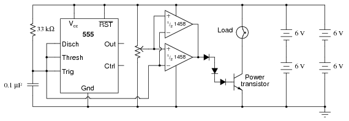
ILUSTRACIÓN
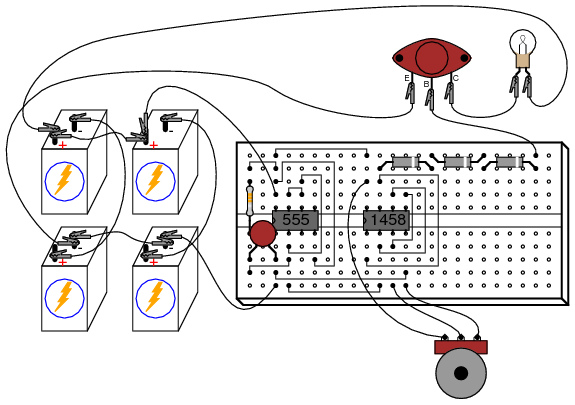
INSTRUCCIONES
Este circuito utiliza un temporizador 555 para generar una forma de onda de voltaje en forma de diente de sierra a través de un capacitor, luego compara esa señal con un voltaje constante proporcionado por un potenciómetro, usando un amplificador operacional como comparador. La comparación de estas dos señales de voltaje produce una salida de onda cuadrada del amplificador operacional, cuyo ciclo de trabajo varía según la posición del potenciómetro. Esta señal de ciclo de trabajo variable luego impulsa la base de un transistor de potencia, activando y desactivando la corriente a través de la carga. La frecuencia de oscilación del 555 es mucho más alta que la capacidad del filamento de la lámpara para realizar ciclos térmicos (calentar y enfriar), por lo que cualquier variación en el ciclo de trabajo oancho de pulso, tiene el efecto de controlar la potencia total disipada por la carga a lo largo del tiempo.
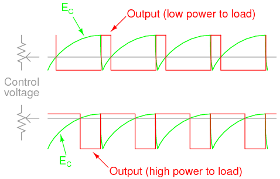
El control de la energía eléctrica a través de una carga mediante su encendido y apagado rápido y variando el tiempo de "encendido" se conoce comomodulación de ancho de pulso, oPWM. Es un medio muy eficiente de controlar la energía eléctrica porque el elemento de control (el transistor de potencia) disipa comparativamente poca energía al encender y apagar, especialmente si se compara con la energía desperdiciada disipada por un reóstato en una situación similar. Cuando el transistor está en corte, su disipación de potencia es cero porque no pasa corriente a través de él. Cuando el transistor está saturado, su disipación es muy baja porque hay poca caída de voltaje entre el colector y el emisor mientras conduce corriente.
PWM es un concepto que se entiende más fácilmente mediante la experimentación que la lectura. Sería bueno ver el voltaje del capacitor, el voltaje del potenciómetro y las formas de onda de salida del amplificador operacional, todo en un osciloscopio (de triple traza) para ver cómo se relacionan entre sí y con la potencia de carga. Sin embargo, la mayoría de nosotros no tenemos acceso a un osciloscopio de triple traza, y mucho menos a ningún osciloscopio, por lo que un método alternativo es reducir la velocidad del oscilador 555 lo suficiente como para que los tres voltajes puedan compararse con un simple voltímetro de CC. Reemplace el condensador de 0,1 µF por uno de 100 µF o más. Esto reducirá la frecuencia de oscilación en un factor de al menos mil, lo que le permitirá medir el voltaje del capacitor.despacioaumenta con el tiempo y la salida del amplificador operacional pasa de "alta" a "baja" cuando el voltaje del capacitor se vuelve mayor que el voltaje del potenciómetro. Con una frecuencia de oscilación tan lenta, la potencia de carga no será proporcionada como antes. Más bien, la lámpara se encenderá y apagará a intervalos regulares. Siéntase libre de experimentar con otros valores de capacitor o resistencia para acelerar las oscilaciones lo suficiente como para que la lámpara nunca se encienda o apague por completo, sino que se "estrangule" mediante un rápido encendido y apagado del transistor.
Cuando examines el esquema, notarástwoAmplificadores operacionales conectados en paralelo. Esto se hace para proporcionar la máxima salida de corriente al terminal base del transistor de potencia. Es posible que un solo amplificador operacional (la mitad de un IC 1458) no pueda proporcionar suficiente corriente de salida para saturar el transistor, por lo que se usan dos amplificadores operacionales en tándem. Esto sólo debe hacerse si los amplificadores operacionales en cuestión están protegidos contra sobrecargas, como lo está la serie 1458 de amplificadores operacionales. De lo contrario, es posible (aunque poco probable) que un amplificador operacional se encienda antes que el otro, y que se produzcan daños si las dos salidas se cortocircuitan entre sí (una se activa en "alta" y la otra en "baja" simultáneamente). La protección inherente contra cortocircuitos que ofrece el 1458 permite la activación directa de la base del transistor de potencia sin necesidad de una resistencia limitadora de corriente.
Los tres diodos en serie que conectan las salidas de los amplificadores operacionales a la base del transistor están ahí para reducir el voltaje y garantizar que el transistor caiga en corte cuando las salidas del amplificador operacional estén "bajas". Debido a que el amplificador operacional 1458 no puede hacer oscilar su voltaje de salida hasta el potencial de tierra, sino solo dentro de aproximadamente 2 voltios de tierra, una conexión directa del amplificador operacional al transistor significaría que el transistor nunca se apagaría por completo. Agregar tres diodos de silicio en serie cae aproximadamente 2,1 voltios (0,7 voltios por 3) para garantizar que haya un voltaje mínimo en la base del transistor cuando las salidas del amplificador operacional estén "bajas".
Es interesante escuchar la señal de salida del amplificador operacional a través de un detector de audio mientras el potenciómetro se ajusta en todo su rango de movimiento. Ajustar el potenciómetro no tiene ningún efecto sobre la frecuencia de la señal, pero afecta en gran medida el ciclo de trabajo. Note la diferencia en la calidad del tono, otimbre, ya que el potenciómetro varía el ciclo de trabajo de 0% a 50% a 100%. Variar el ciclo de trabajo tiene el efecto de cambiar el contenido armónico de la forma de onda, lo que hace que el tono suene diferente.
Es posible que notes una singularidad particular en el sonido que se escucha a través de los auriculares del detector cuando el potenciómetro está en la posición central (50% del ciclo de trabajo - 50% de potencia de carga), versus un tipo de similitud en el sonido justo por encima o por debajo del 50% del ciclo de trabajo. Esto se debe a la ausencia o presencia de armónicos pares. Cualquier forma de onda que sea simétrica por encima y por debajo de su línea central, como una onda cuadrada con un ciclo de trabajo del 50%, contienenoarmónicos pares, solo impares. Si el ciclo de trabajo está por debajo o por encima del 50%, la forma de ondanotexhiben esta simetría y habrá armónicos pares. La presencia de estas frecuencias armónicas pares puede ser detectada por el oído humano, ya que algunas de ellas corresponden aoctavasde la frecuencia fundamental y así "encajar" más naturalmente en el esquema tonal.
Class B audio amplifier
PIEZAS Y MATERIALES
- Cuatro baterías de 6 voltios
- Amplificador operacional dual, se recomienda modelo TL082 (catálogo de Radio Shack # 276-1715)
- Un transistor de potencia NPN en un paquete TO-220 -- (catálogo de Radio Shack n.° 276-2020 o equivalente)
- Un transistor de potencia PNP en un paquete TO-220 - (catálogo de Radio Shack # 276-2027 o equivalente)
- Un diodo de conmutación 1N914 (catálogo de Radio Shack # 276-1620)
- Un capacitor, electrolítico de 47 µF, 35 WVDC (catálogo de Radio Shack # 272-1015 o equivalente)
- Dos condensadores, 0,22 µF, no polarizados (catálogo de Radio Shack # 272-1070)
- Un potenciómetro de 10 kΩ, conicidad lineal (catálogo de Radio Shack # 271-1715)
Asegúrese de utilizar un amplificador operacional que tenga un altovelocidad de giro. Evite el LM741 o LM1458 por este motivo.
Cuanto más coincidentes estén los dos transistores, mejor. Si es posible, intente obtener transistores TIP41 y TIP42, que son transistores de potencia NPN y PNP muy similares con índices de disipación de 65 vatios cada uno. Si no puede conseguir un transistor NPN TIP41, el TIP3055 (disponible en Radio Shack) es un buen sustituto. No utilice transistores de potencia muy grandes (es decir, caja TO-3), ya que el amplificador operacional puede tener problemas para conducir suficiente corriente a sus bases para un buen funcionamiento.
REFERENCIAS CRUZADAS
Lecciones en circuitos eléctricos, Volumen 3, capítulo 4: "Transistores de unión bipolares"
Lecciones en circuitos eléctricos, Volumen 3, capítulo 8: "Amplificadores operacionales"
OBJETIVOS DE APRENDIZAJE
- Cómo construir un amplificador clase B "push-pull" utilizando transistores bipolares complementarios
- Los efectos de la "distorsión cruzada" en un circuito amplificador push-pull
- Uso de retroalimentación negativa a través de un amplificador operacional para corregir las no linealidades del circuito
DIAGRAMA ESQUEMÁTICO
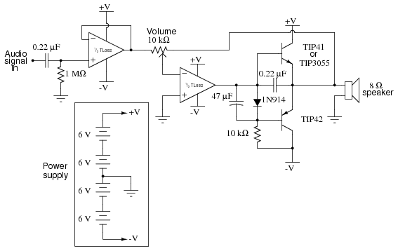
ILUSTRACIÓN
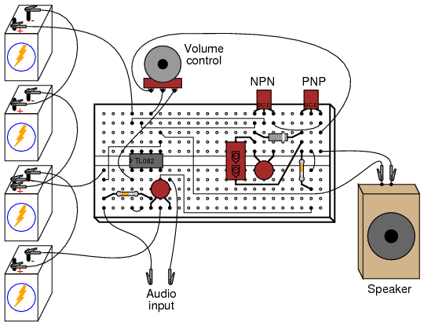
INSTRUCCIONES
Este proyecto es un amplificador de audio adecuado para amplificar la señal de salida de una pequeña radio, reproductor de cintas, reproductor de CD o cualquier otra fuente de señales de audio. Para funcionamiento estéreo se deben construir dos amplificadores idénticos, uno para el canal izquierdo y otro para el canal derecho. Para obtener una señal de entrada para que este amplificador la amplifique, simplemente conéctelo a la salida de una radio u otro dispositivo de audio como este:

Este circuito amplificador también funciona bien para amplificar señales de audio de "nivel de línea" de componentes estéreo modulares de alta calidad. Proporciona una sorprendente cantidad de potencia de sonido cuando se reproduce a través de un altavoz grande y puede funcionar sin disipadores de calor en los transistores (aunque debes experimentar un poco con él antes de decidir prescindir de los disipadores de calor, ya que la disipación de potencia varía según el tipo de altavoz utilizado).
El objetivo de cualquier circuito amplificador es reproducir la forma de onda de entrada con la mayor precisión posible. Por supuesto, la reproducción perfecta es imposible, y cualquier diferencia entre las formas de onda de salida y de entrada se conoce comodistorsión. En un amplificador de audio, la distorsión puede provocar que se superpongan tonos desagradables al sonido real. Existen muchas configuraciones diferentes de circuitos amplificadores de audio, cada una con sus propias ventajas y desventajas. Este circuito en particular se llama "clase B".empujar-tirarcircuito.
La mayoría de los amplificadores de "potencia" de audio utilizan una configuración de clase B, donde un transistor proporciona energía a la carga durante la mitad del ciclo de forma de onda (empuja) y un segundo transistor proporciona energía a la carga durante la otra mitad del ciclo (tira). En este esquema, ninguno de los transistores permanece "encendido" durante todo el ciclo, lo que le da a cada uno un tiempo para "descansar" y enfriarse durante el ciclo de forma de onda. Esto lo convierte en un circuito amplificador de bajo consumo, pero conduce a un tipo distinto de no linealidad conocido como "distorsión cruzada".
Aquí se muestra una forma de onda sinusoidal, equivalente a un tono de audio constante de volumen constante:
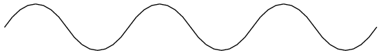
En un circuito amplificador push-pull, los dos transistores se turnan para amplificar los semiciclos alternos de la forma de onda de esta manera:
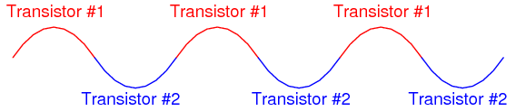
Sin embargo, si la "transferencia" entre los dos transistores no está sincronizada con precisión, la forma de onda de salida del amplificador puede verse así en lugar de una onda sinusoidal pura:
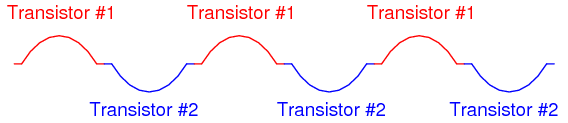
Aquí, la distorsión resulta del hecho de que hay un retraso entre el momento en que un transistor se apaga y el otro transistor se enciende. Este tipo de distorsión, donde la forma de onda se "aplana" en el punto de cruce entre los semiciclos positivos y negativos, se llamadistorsión cruzada. Un método común para mitigar la distorsión cruzada es polarizar los transistores para que sus puntos de encendido/apagado realmente se superpongan, de modo queambosLos transistores están en estado de conducción por un breve momento durante el período de cruce:
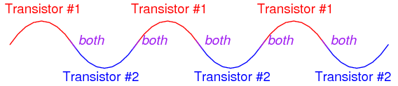
Esta forma de amplificación se conoce técnicamente como clase.ABen lugar de clase B, porque cada transistor está "encendido" durante más del 50% del tiempo durante un ciclo completo de forma de onda. La desventaja de hacer esto, sin embargo, es el mayor consumo de energía del circuito amplificador, porque durante los momentos en que ambos transistores están conduciendo, hay corriente conducida a través de los transistores que esnotpasa por la carga, pero simplemente está en "cortocircuito" de un riel de suministro de energía al otro (de -V a +V). Esto no sólo es un desperdicio de energía, sino que también disipa más energía térmica en los transistores. Cuando los transistores aumentan de temperatura, sus características cambian (Vbecaída de voltaje directo, β, resistencias de unión, etc.), dificultando la polarización adecuada.
En este experimento, los transistores funcionan en modo clase B puro. Es decir, nunca conducen al mismo tiempo. Esto ahorra energía y disminuye la disipación de calor, pero se presta a una distorsión cruzada. La solución adoptada en este circuito es utilizar un amplificador operacional con retroalimentación negativa para impulsar rápidamente los transistores a través de la zona "muerta" produciendo distorsión de cruce y reducir la cantidad de "aplanamiento" de la forma de onda durante el cruce.
El primer amplificador operacional (el más a la izquierda) que se muestra en el diagrama esquemático no es más que un búfer. Un búfer ayuda a reducir la carga de la red de condensadores/resistencias de entrada, que se ha colocado en el circuito para filtrar cualquier voltaje de polarización de CC de la señal de entrada, evitando que el circuito amplifique cualquier voltaje de CC y se envíe al altavoz, donde podría causar daños. Sin el amplificador operacional de búfer, el circuito de filtrado de condensador/resistencia reduce la respuesta de baja frecuencia ("graves") del amplificador y acentúa la alta frecuencia ("agudos").
El segundo amplificador operacional funciona como un amplificador inversor cuya ganancia está controlada por el potenciómetro de 10 kΩ. Esto no hace más que proporcionar un control de volumen para el amplificador. Por lo general, los circuitos de amplificador operacional inversor tienen sus resistencias de retroalimentación conectadas directamente desde el terminal de salida del amplificador operacional al terminal de entrada inversor de esta manera:
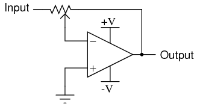
Sin embargo, si usáramos la señal de salida resultante para accionar los terminales de base del par de transistores push-pull, experimentaríamos una distorsión cruzada significativa, porque habría una zona "muerta" en el funcionamiento de los transistores cuando el voltaje de base pasara de + 0,7 voltios a - 0,7 voltios:
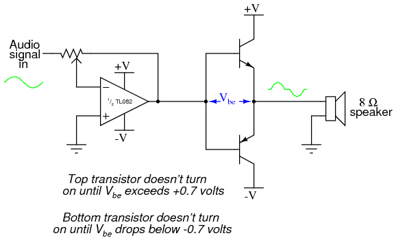
Si ya has construido el circuito amplificador en su forma final, puedes simplificarlo a esta forma y escuchar la diferencia en la calidad del sonido. Si aún no ha comenzado la construcción del circuito, el diagrama esquemático que se muestra arriba sería un buen punto de partida. ¡Amplificará una señal de audio, pero sonará horrible!
La razón de la distorsión cruzada es que cuando la señal de salida del amplificador operacional está entre + 0,7 voltios y - 0,7 voltios, ninguno de los transistores conducirá y el voltaje de salida al altavoz será de 0 voltios durante todo el lapso de 1,4 voltios de la oscilación del voltaje base. Por lo tanto, hay una "zona" en el rango de la señal de entrada donde no se producirá ningún cambio en el voltaje de salida del altavoz. Aquí es donde generalmente se introducen complejas técnicas de polarización en el circuito para reducir este "espacio" de 1,4 voltios en la respuesta de la señal de entrada del transistor. Normalmente se hace algo como esto:
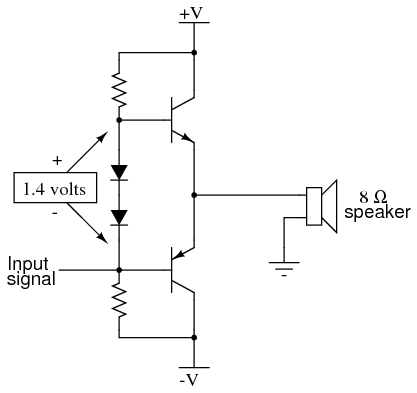
Los dos diodos conectados en serie caerán aproximadamente 1,4 voltios, equivalente al V combinadobecaídas de voltaje directo de los dos transistores, lo que resulta en un escenario en el que cada transistor está a punto de encenderse cuando la señal de entrada es de cero voltios, eliminando la zona de señal "muerta" de 1,4 voltios que existía antes.
Desafortunadamente, sin embargo, esta solución no es perfecta: a medida que los transistores se calientan al conducir la energía a la carga, su VbeLas caídas de voltaje directo disminuirán de 0,7 voltios a algo menos, como 0,6 voltios o 0,5 voltios. Los diodos, que no están sujetos al mismo efecto de calentamiento porque no conducen ninguna corriente sustancial, no experimentarán el mismo cambio en la caída de tensión directa. Por lo tanto, los diodos seguirán proporcionando el mismo voltaje de polarización de 1,4 voltios incluso aunque los transistores requieran menos voltaje de polarización debido al calentamiento. El resultado será que el circuito pasa a funcionamiento de clase AB, dondeambosLos transistores estarán en estado de conducción parte del tiempo. Esto, por supuesto, dará como resultado una mayor disipación de calor a través de los transistores, exacerbando el problema del cambio de caída de voltaje directo.
Una solución común a este problema es la inserción de resistencias de "retroalimentación" de compensación de temperatura en las patas del emisor del circuito del transistor push-pull:
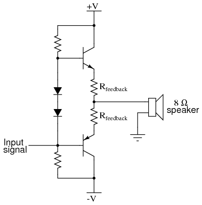
Esta solución no evita el encendido simultáneo de los dos transistores, sino que simplemente reduce la gravedad del problema y evita la fuga térmica. También tiene el desafortunado efecto de insertar resistencia en la ruta de la corriente de carga, limitando la corriente de salida del amplificador. La solución por la que opté en este experimento es una que aprovecha el principio de retroalimentación negativa del amplificador operacional para superar las limitaciones inherentes del circuito de salida del transistor push-pull. Utilizo un diodo para proporcionar un voltaje de polarización de 0,7 voltios para el par push-pull. Esto no es suficiente para eliminar la zona de señal "muerta", pero la reduce al menos en un 50%:
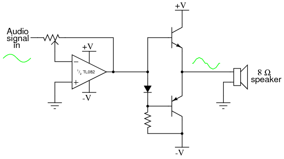
Dado que la caída de voltaje de un solo diodo siempre será menor que las caídas de voltaje combinadas de las uniones base-emisor de los dos transistores, los transistores nunca pueden encenderse simultáneamente, lo que impide el funcionamiento de clase AB. A continuación, para ayudar a eliminar la distorsión cruzada restante, la señal de retroalimentación del amplificador operacional se toma del terminal de salida del amplificador (los terminales emisores de los transistores) de esta manera:
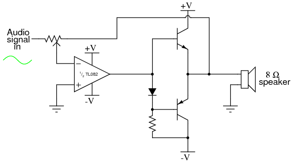
La función del amplificador operacional es emitir cualquier señal de voltaje necesaria para mantener sus dos terminales de entrada al mismo voltaje (diferencial de 0 voltios). Al conectar el cable de retroalimentación a los terminales del emisor de los transistores push-pull, el amplificador operacional tiene la capacidad de detectar cualquier zona "muerta" donde ninguno de los transistores esté conduciendo y enviar una señal de voltaje adecuada a las bases de los transistores para conducirlos rápidamente nuevamente a la conducción para "mantenerse al día" con la forma de onda de la señal de entrada. Esto requiere un amplificador operacional con un altovelocidad de giro(la capacidad de producir un voltaje de salida que aumenta o disminuye rápidamente), razón por la cual se especificó el amplificador operacional TL082 para este circuito. Es posible que los amplificadores operacionales más lentos, como el LM741 o el LM1458, no puedan mantener el alto dv/dt (tasa de cambio de voltaje a lo largo del tiempo, también conocida comode/dt) necesario para un funcionamiento con baja distorsión.
Solo se agregan un par de capacitores a este circuito para darle su forma final: un capacitor de 47 µF conectado en paralelo con el diodo ayuda a mantener constante el voltaje de polarización de 0,7 voltios a pesar de las grandes oscilaciones de voltaje en la salida del amplificador operacional, mientras que un capacitor de 0,22 µF conectado entre la base y el emisor del transistor NPN ayuda a reducir la distorsión cruzada en configuraciones de volumen bajo:
Lecciones en circuitos eléctricoscopyright (C) 2002-2023 Tony R. Kuphaldt, según los términos y condiciones delCC BY License.